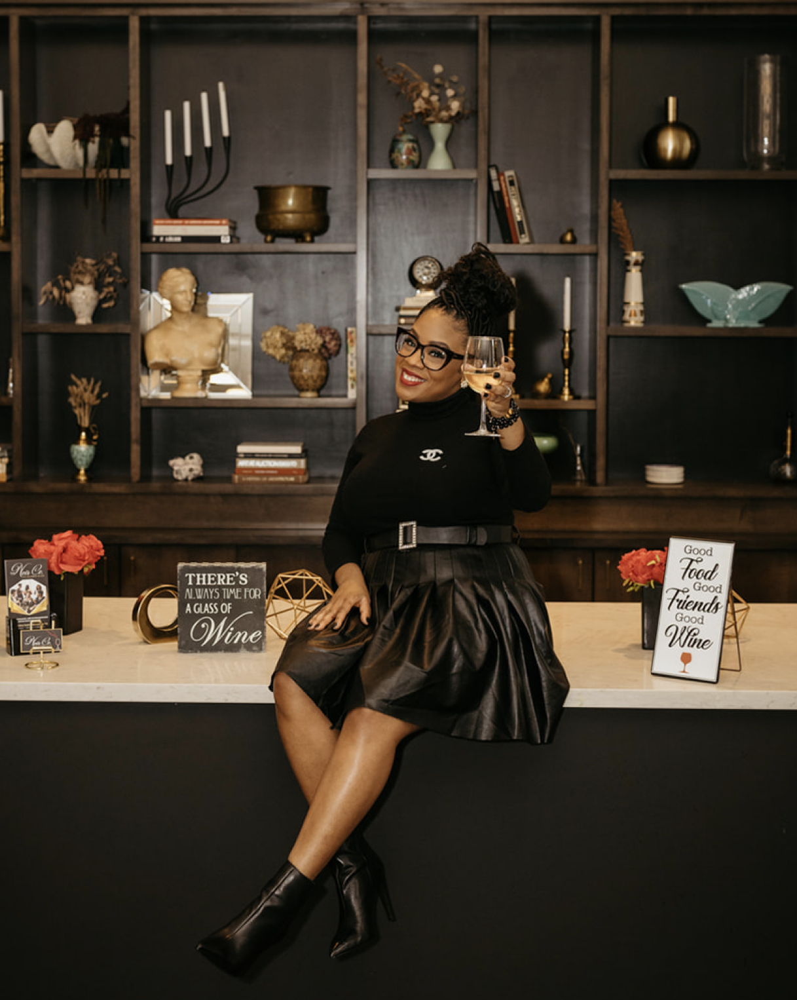
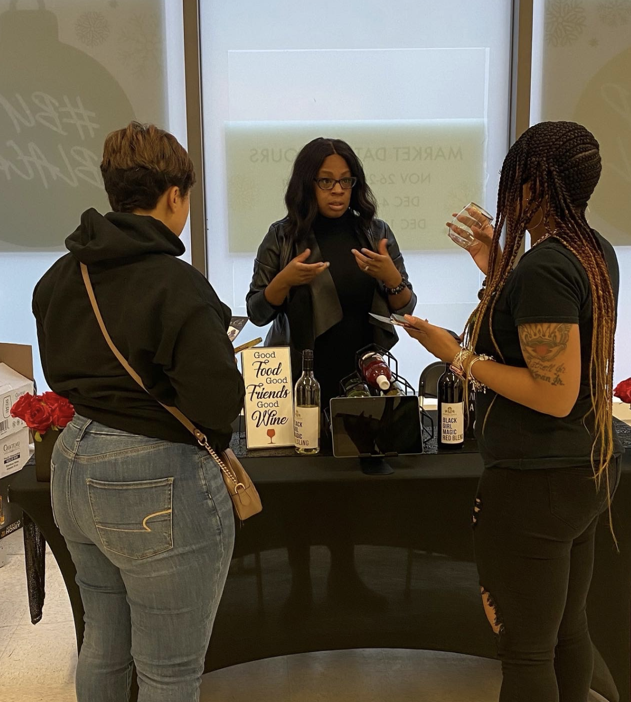

Who We Are
We are a boutique wine consulting firm committed to curating luxury wine
events, products and services that highlight black-owned brands in support
of the black wine industry. We offer private tastings, public events, luxury
wine boxes, and WINEtending services.Local to Pittsburgh, we are a
by-appointment small business focused on delivering services and products
that meet our clients’ preferences and exceed our clients’ expectations.
Monique Smith, the Founder & Principal Wine Consultant of The Noir Co.,
is a wife and mother of 3, born and raised on the eastside of Pittsburgh, PA.


Our Story
Monique has always been a lover of all things wine! After being gifted a bottle of black girl magic wine, she became more intrigued with the black wine industry. Inspired by her experiences with the Atlanta Wine & Culture Fest, a celebration focused on showcasing BIPOC wine lovers, Monique set out to bring those spirits to the Pittsburgh community. As a wine enthusiast herself, she created The Noir Co. as a platform to support and promote black-owned wine brands and highlight the fast-growing black wine industry.
Our Vision
All Black Everything.
The Noir Co. means "The Black Company" in French and
speaks to our devotion to this vision.It is important
for black people in this industry to be uplifted and
economically supported.
We dedicate our knowledge, our time, and our resources
to expose as many people to the community, the products,
the services and the opportunities. We strive
continuously to push new boundaries and introduce
new markets.
As the premier boutique wine consulting firm of its kind
in the Pittsburgh region, we seek to connect wine
lovers with experiences and tastes they may not
otherwise find locally.
Between 2019 and 2021 alone, the Association of
African American Vintners grew by 500%. Since then,
the American wine industry has seen increasing buzz
around recognizing the incredible, still-untapped
potential of black wine-makers and wineries, who make
up less than 1% of all U.S. wineries, despite more than
10% of the market attributed to black consumers.
Our Press
Monique has always been a lover of all things wine! After being gifted a bottle of black girl magic wine, she became more intrigued with the black wine industry. Inspired by her experiences with the Atlanta Wine & Culture Fest, a celebration focused on showcasing BIPOC wine lovers, Monique set out to bring those spirits to the Pittsburgh community. As a wine enthusiast herself, she created The Noir Co. as a platform to support and promote black-owned wine brands and highlight the fast-growing black wine industry.